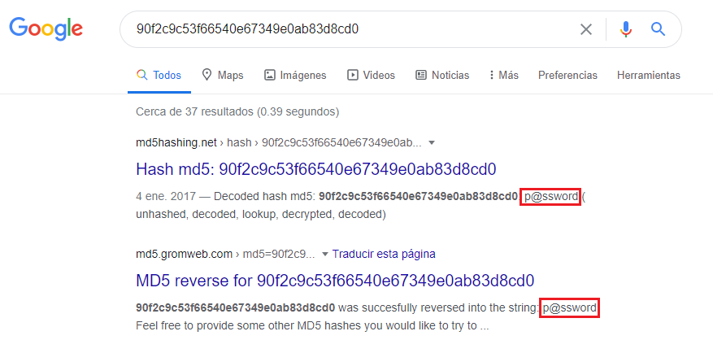
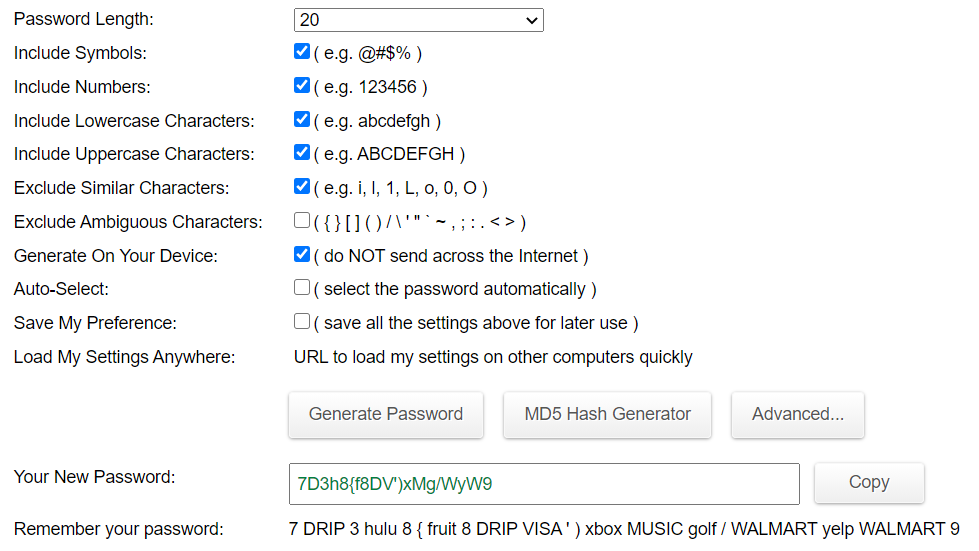
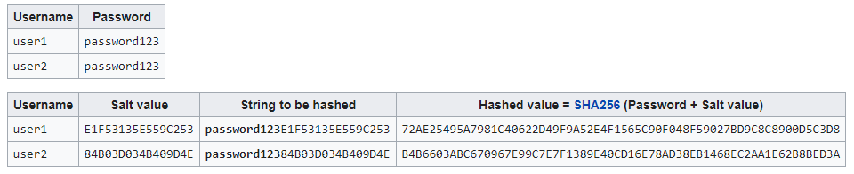
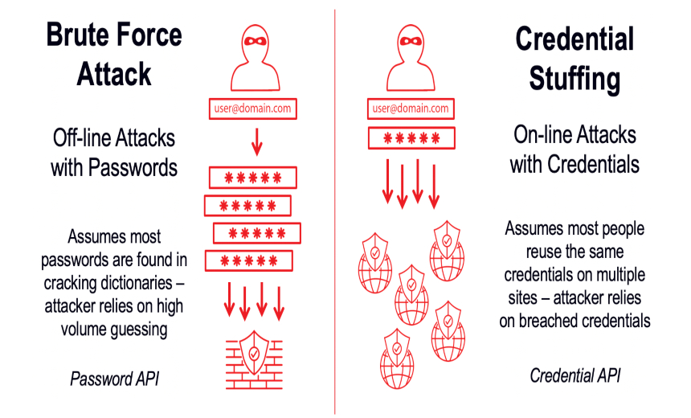

Ataques de fuerza bruta y los diccionarios de contraseñas
Análisis sobre cómo se llevan a cabo y la industria detrás, 8 de noviembre 2020
Ataque de Fuerza Bruta es el nombre que reciben aquellos casos donde los atacantes realizan millones de intentos para conseguir credenciales ajenas para ingresar sesión a un sitio. En palabras simples, es como si el atacante tuviese el mail asociado a tu cuenta de twitter y realizara millones de intentos, uno por uno, hasta descubrir tu contraseña. Un ejemplo del día a día sería lo que hace mi mamá, analista de sistemas, cada día cuando quiere llamarme. Prueba con los nombres de sus hijos, uno por uno, hasta que finalmente dice el mío. No es un método rápido, pero definitivamente es eficiente.
Hoy en día casi todas las páginas suelen estar preparadas para este tipo de ataques y toman medidas para prevenirlos, como por ejemplo limitar la cantidad de intentos fallidos que puede hacer un usuario para ingresar sesión. Debido a esto, se puede decir que todos los ataques de fuerza bruta se llevan a cabo de manera offline, corroborando las respuestas con una base de datos de combo lists. Una combo list, como se menciona en el artículo sobre la inseguridad de las contraseñas, es una lista de mails y contraseñas, algo similar a la foto a continuación.

La mayor diferencia entre una combolist y la foto es que las listas suelen traer las contraseñas hasheadas, como se guardan en las páginas web. “Hashear” una contraseña es aplicarle una función (un hash) para que sea ilegible. Un ejemplo de un hash sería MD5, una fórmula muy popular que se aplicaba para transformar las contraseñas, pero que hoy en día cayó en desuso por la facilidad de averiguar la contraseña a partir del hash de la misma. Como demostración, si le aplica el hash MD5 al hilo “p@ssword”, procedimiento que se puede hacer en md5hashgenerator.com, daría como resultado “90f2c9c53f66540e67349e0ab83d8cd0”, un hilo incomprensible que con solo verlo no alcanza para determinar la contraseña que el corresponde.
La razón por la que utilizamos los hashes en primer lugar es para que tanto empleados de la empresa como los atacantes que ganen acceso a la base de datos, no puedan ver tu contraseña. El concepto detrás de todo esto es que el hash que se obtiene de una contraseña se puede obtener en microsegundos, mientras determinar la contraseña a partir de un hash (el camino inverso) es un proceso que podría tardar miles de años, dependiendo de la seguridad del mismo. Cuando mencioné que el MD5 cayó en desuso, es porque las técnicas de encriptación que utiliza ya quedaron en el pasado, y lo que es más importante, el hash estuvo vigente tanto tiempo, desde 1991, que ya se saben muchas de las correlaciones entre contraseñas y hashes. Y como ejemplo de esto está el hash calculado antes, 90f2c9c53f66540e67349e0ab83d8cd0, que si se busca en google se encuentra que el hilo que le corresponde es “p@ssword”.
Es necesario notar que este es sólo uno de los usos de los hashes, y que el material cifrado no tiene por qué ser una contraseña. Dejando eso de lado por el momento, y volviendo al tema original, previo a un ataque de fuerza bruta un atacante suele tener una lista de mails con el hash de sus contraseñas. Como sería inútil intentar determinar la contraseña a partir del hash, lo que se hace es hashear combinaciones de letras semi aleatorias hasta que una combinación devuelve el mismo hash que la contraseña. Si se tiene que a la contraseña le corresponde el hash “0d107d09f5bbe40cade3de5c71e9e9b7”, entonces se prueban todas las contraseñas posibles hasta que una devuelva ese mismo hash, en el caso de la imagen: “P@ssword”.
Un detalle que cabe destacar, es que si una contraseña puede contener números, minúsculas, mayúsculas y caracteres especiales, con tener 12 dígitos de largo ya representa 475 920 315 000 000 000 000 000 combinaciones posibles. Para tener una idea de la magnitud, esa cantidad en segundos ya es 1 100 803 veces más que la cantidad de segundos que pasaron desde el nacimiento del universo. En otras palabras, sí, son muchas combinaciones posibles. Sin embargo, también hay que tener en cuenta que no somos robots, y la gente suele tener contraseñas como “Qw3rty” y no “7D3h8{f8DV')xMg/WyW9”, como sugieren páginas como passwordsgenerator.net.
Imagino que todos notaron el pie de la imagen que dice “remember your password: 7 DRIP 3 hulu 8 { fruit 8 DRIP VISA ‘ ) xbox MUSIC golf / WALMART yelp WALMART 9”... ¿No? No sé el resto de ustedes, pero yo llego a leer eso y termino invocando a 3 demonios en el proceso, ¿y se supone que me lo tengo que memorizar? Teniendo en cuenta el hecho de que además necesito una contraseña distinta para cada cuenta que hago, no hay forma de que me acuerde de lo que sea que es eso, y por eso mismo es que mis contraseñas, como las de casi cualquier otra persona, no son tan seguras como me gustaría creer.
Hay que tener en cuenta que los atacantes están al tanto de esto, y no se molestan en probar las 475 920 315 000 000 000 000 000 combinaciones mencionadas antes (o más si la contraseña tiene más de 12 caracteres). Lo que se hace hoy en día para descubrir contraseñas es realizar un “ataque de diccionario”. Esto es, un ataque de fuerza bruta donde en vez de probar con todas las combinaciones posibles, se prueba con las contraseñas más comunes o también, contraseñas de filtraciones de datos previas, dado que muchos de los usuarios reúsan sus contraseñas en distintos sitios, con los números alternando entre 12 y 65% de la población dependiendo de la fuente. (mirar las encuestas para más información.)
Estos diccionarios de contraseñas se encuentran internet, y si bien están los que contienen todas las contraseñas que alguna vez se filtraron (1 493 677 782), la mayoría usa un diccionario menor que contenga algunos millones de contraseñas ya que esto le permite ganar acceso a más cuentas en una menor cantidad de tiempo. Como ejemplo está Joseph Bonneau, ganador del premio en ciberseguridad de NSA en 2013, quien realizó un estudio sobre el porcentaje de usuarios que reúsan contraseñas, usando como muestra contraseñas hasheadas de filtraciones de Gawker y rootkit.com. Usando un diccionario de 10 millones de contraseñas, logró crackear el 44% de las 81 000 contraseñas de Rootkit en tan solo 5 minutos. Y hay que tener en cuenta que esto fue con fines académicos, ya que cualquier atacante con mayor poder de procesamiento puede probar hasta 150 millones de contraseñas distintas por segundo.
Para combatir los ataques de diccionario donde los atacantes prueban hashear las contraseñas más comunes hasta que un hash coincida, lo que se hace es agregarle una “Salt” (en español, sal) a la contraseña. Una Salt es un hilo de caracteres aleatorios que se le agrega a la contraseña antes de aplicarle la función hash, así al atacante no le queda otra opción que intentar la fuerza bruta pura (a menos que conozcan la salt).
Este cuadro sacado de Wikipedia muestra claramente el uso de Salts aleatorias para el hash de contraseñas. Lo que es más, al crear una Salt distinta para cada usuario, por más de que estos tengan la misma contraseña nunca tendrán el mismo hash, de manera que la seguridad se incrementa dado que es prácticamente imposible que un hash se repita. Y volviendo al estudio de Joseph Bonneau sobre Gawker y Rootkit, este solo pudo determinar tantas contraseñas a partir de los hashes debido a un desastroso manejo de la seguridad de parte de ambas empresas. Gawker por su parte ya contó con numerosas fallas de seguridad, como acortar todas las contraseñas a 8 caracteres máximo antes de guardarlas con un salt simple, y Rootkit por el otro lado aplicó únicamente el hash MD5 sin una Salt, una función de hash que, como mencioné antes, ya es insegura debido a que existen tablas con las contraseñas más comunes y los hashes correspondientes (Rainbow tables).
Viendo casos como estos donde la culpa de los usuarios es mínima, y la falla de seguridad provino de parte de la empresa, se nota el peligro que presenta reutilizar contraseñas. Habiendo páginas que poco se esfuerzan por mantener tu información privada, ¿realmente usarías la misma contraseña para estos sitios que para tu banco? ¿Y para tu mail? El concepto de usar contraseñas únicas es uno que resurge entre artículos, pero se ve que, después de todo, todos los caminos conducen a Roma.
Esto último es especialmente importante cuando se tiene en cuenta el Credential Stuffing (Relleno de credenciales), un concepto del que se habla más en detalle en el artículo ”Las contraseñas no son débiles, nosotros lo somos”. En la página se analiza el uso de combolists de mails y contraseñas, pero hay que tener en cuenta que, como se mencionó acá, las combolists de sitios como Combo-list.com suelen venir con hashes en vez de contraseñas en texto plano. Y son los ataques de fuerza bruta con diccionario los que se encargan de traducir esta información para luego venderla a un precio mayor.
En resumen, los que se dedican a esto no suelen robar la información, sino que simplemente la desencriptan, a veces para revenderla, y otras veces para probarla ellos mismos en otros sitios. Similar a un productor de trigo que decide entre vender el grano o trabajarlo y vender harina, esto no es más que otra industria con sus correspondientes trabajadores con la diferencia de que estos trabajan al borde de la ley. Y esto lo explican páginas como Forbes.com cuando dicen que 2020 será el año the “Combolist as a service”, una predicción que hicieron a fines de 2019 y hoy por hoy es bastante acertada. Hackear es cada vez menos un hobby o un crimen y pasa a ser parte del día a día, casi como un trabajo. Y son estos hackers la razón por la que deberíamos estar preocupados.
En el comienzo del internet un hacker era aquél que conseguía servicio telefónico gratis, tiempo después se convirtió en aquél que veía hackear grandes empresas como desafíos. Pero hoy en día la rentabilidad de la industria llevó a que miles de personas ingresen únicamente por la recompensa, y son estos, los que perjudican a los usuarios corrientes y cruzan toda línea ética a los que deberíamos temer. Después de todo, lo único que se interpone entre nuestra información y estos atacantes son los desarrolladores de los sitios web, pero como ya vimos, estos también son humanos, y también cometen errores. Y razones como estas hacen que debamos cuidar de nuestra seguridad y no esperar a que otro lo haga por nosotros.
Después de todo, una pequeña página como Rootkit nunca invertiría tantos fondos en ciberseguridad como Google, y por lo tanto no podemos confiarle la misma cantidad de información y esperar que la cuiden. Más importante, no podemos confiarle nuestra contraseña de Google y esperar que no sufran filtraciones de datos, cuando su presupuesto en ciberseguridad es tan abundante como la costa marítima en Bolivia. A fin de cuentas, uno puede pasar su vida culpando a los que fallan en desarrollar un sitio web seguro, pero estos sitios seguirán existiendo y seguirán siendo hackeados. Por eso es que si hoy tu cuenta de Rootkit es filtrada y con ella la contraseña de tu banco, se puede decir que el mayor error provino de tu parte. No hay mayor error que el de reutilizar contraseñas, y sin embargo los estudios demuestran que cada vez más gente lo hace. Por eso es que creo que hoy en día el mayor riesgo para nuestra seguridad, somos nosotros mismos.
Índice
- Home
- Introducción
- Artículos
- Las contraseñas no son débiles, nosotros lo somos
- La verdad sobre los sitios "No seguros"
- Phishing, la verdadera amenaza al navegar por internet
- Man in the Middle y WiFi Pineapples
- "La rebelión de las máquinas" y ataques DDoS
- El anonimato y el negocio de la información
- Ataques de fuerza bruta y los diccionarios de contraseñas
- "Las (des)ventajas de ser invisible"
- El comportamiento humano y el anonimato
- Encuestas
- Conclusión
- Bibliografía